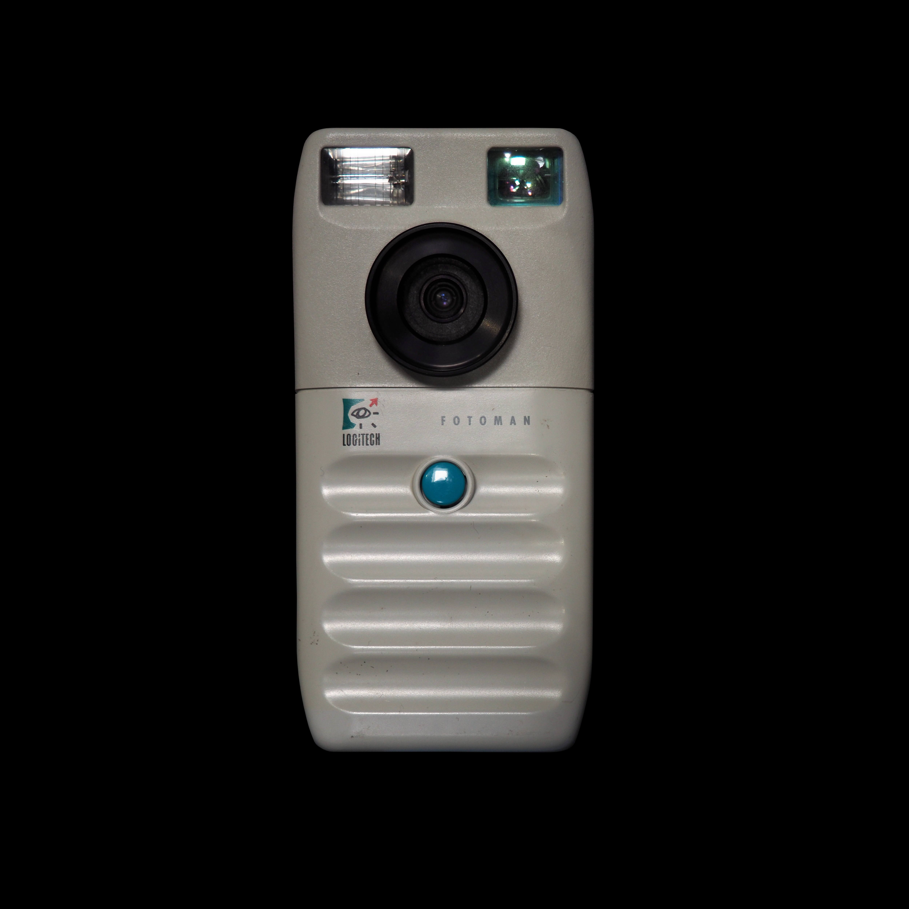
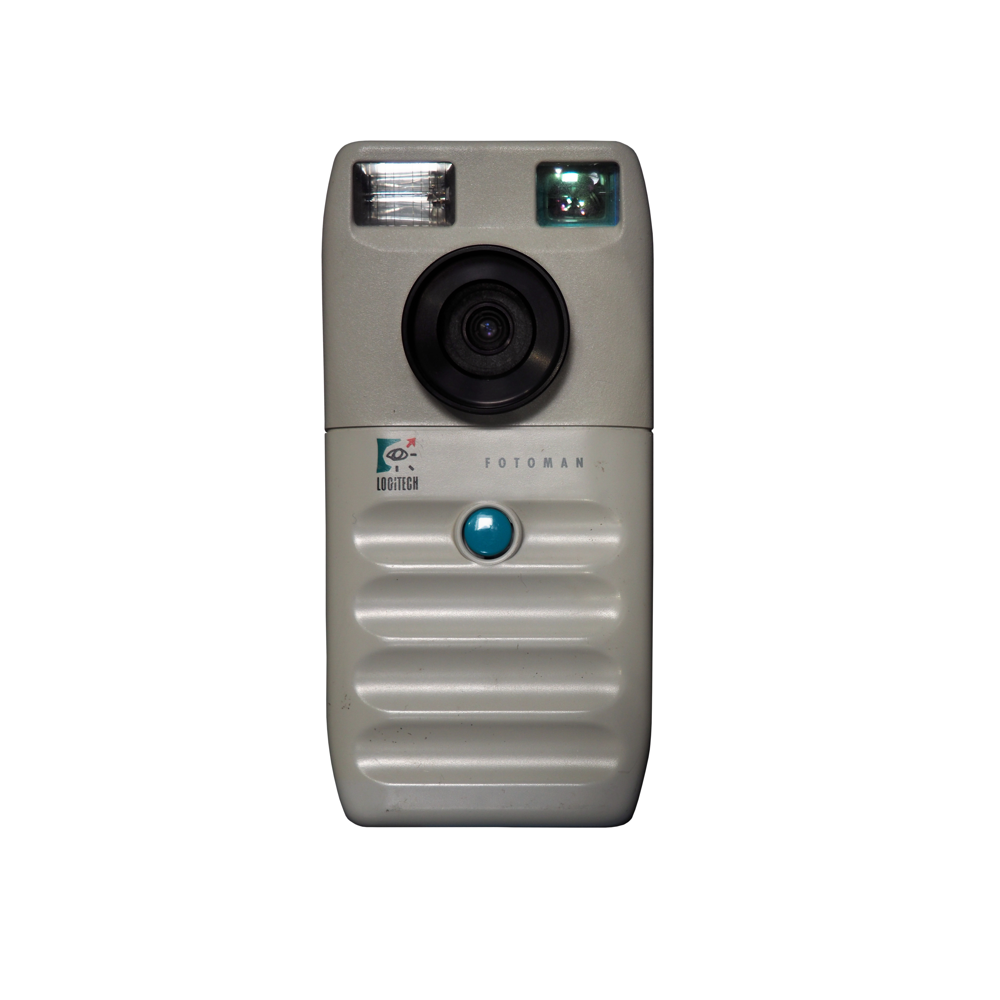
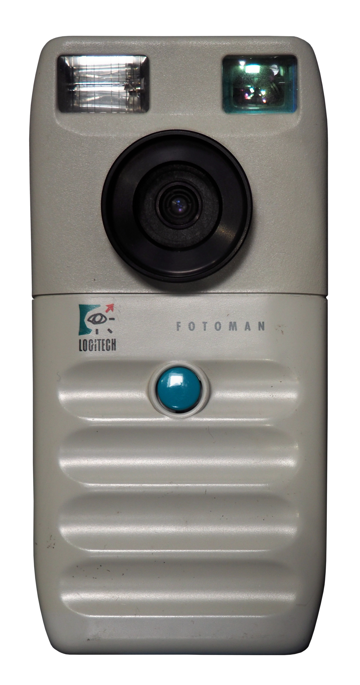

Dycam Model 1 / Logitech Fotoman
The camera with one button, no screen, volatile memory, and a fake shutter sound — a computer peripheral that happened to be shaped like a camera

Overview
The Dycam Model 1, released in 1990 at $995, was the first commercially sold fully-digital consumer camera in the United States. It used a 1/3-inch CCD sensor capturing 376 × 240-pixel 8-bit grayscale images, stored up to 32 compressed images in 1 MB of volatile DRAM, and connected to a PC or Mac via RS-232 serial cable at 9600 baud. The camera had exactly one physical control — the shutter button. Every other function, including turning the flash on or off, required connecting to a computer and using the bundled software. The most telling HCI detail: the physical shutter sound was fake — a speaker generated a simulated click purely to reassure photographers conditioned by 150 years of mechanical shutters. Logitech licensed the technology for $1 million and released it as the Fotoman FM-1 in Europe, adding image-editing software.
Deep dive
The Dycam Model 1 had a single control: the shutter release button. No on/off switch, no mode dial, no LCD preview, no image review — nothing. It could not delete images. It could not adjust flash settings. It could not even report battery status beyond a coded sequence of beeps. As digicamhistory.com notes: "To turn the flash on it was necessary to connect the camera to a computer and use the program that came with the camera. To turn the flash off it was necessary to reconnect the camera to a computer." The design philosophy was radical: this was not a standalone camera that happened to connect to a computer. It was a computer peripheral that happened to be shaped like a camera.
Images lived in 1 MB of volatile DRAM — no flash memory, no removable card, no permanent storage. If the internal rechargeable battery died (about 24 hours without charging), all images were permanently lost. The camera firmware was also held in volatile memory: after a full battery drain, it had to be reloaded from the computer. The Digital Camera Museum notes: "Once the batteries were recharged you had to connect your camera to a computer and download the software into the camera to make it work again!" This created an existential relationship between camera and computer — every photo session ended with a race against the battery clock.
The EPI Centre's John Henshall discovered in his January 1993 review that the Fotoman "has one moving part: the shutter release button." The shutter sound was "a simulated sound, generated to serve no purpose other than to reassure the photographer that an exposure has been made." A second beep about eleven seconds later confirmed the image was saved to DRAM. Henshall noted: "Without these sounds, or with the facility to turn them off as required, the camera would be completely silent." This was one of the earliest documented cases of skeuomorphic audio design in consumer electronics — a pattern that persists in every smartphone camera today.
After shooting, the user connected a serial cable to a PC (Windows 3.0/3.1) or Mac. The bundled FotoTouch software displayed a contact-sheet view of all 32 images — complete with sprocket-hole borders mimicking 35mm film strips, a deliberate skeuomorphic choice to make digital images feel familiar. A battery gauge was shown. Downloading all 32 compressed images at 9600 baud took approximately 17 minutes. Images were saved as 8-bit TIFF or PICT 2 files. A "Tripod Camera Code" could be downloaded into the camera, disabling the flash and allowing manual exposure times of 1–640 milliseconds — the camera was user-reprogrammable, a remarkable feature for 1990.
Dycam Inc. was a small Los Angeles-area engineering startup, reportedly founded by former aerospace imaging engineers. In early 1991, Logitech — the computer mouse company — licensed Dycam's technology for $1 million to produce the Fotoman FM-1. Two versions shipped: first-generation units were identical to the Dycam Model 1; second-generation had a revised body and updated firmware. Logitech's project manager was Paul Laughton, previously notable as the programmer of the original Apple DOS for the Apple II. While the Dycam was US-only and limited, the Fotoman was a global market success, establishing the consumer digital camera category before Apple's QuickTake (1994) or Casio's QV-10 (1995).
Team & pioneers
- Dycam Inc. Los Angeles/Pasadena startup that designed and manufactured the original Model 1 in 1990. Small team reportedly from aerospace/defense imaging backgrounds. Continued producing cameras through at least 1996.
- Paul Laughton Project manager for the Logitech Fotoman at Logitech. Wrote the FotoMan/FotoTouch PC software, TWAIN driver, and firmware utilities. Previously programmed the original Apple DOS for the Apple II.
- Logitech Licensed Dycam technology for $1M in 1991. Marketed the Fotoman FM-1 globally through computer retail channels as a PC peripheral, not a camera product.
Media


Sources
- EPI Centre / John Henshall "Chip Shop" review (Jan 1993) — definitive first-hand review of the Fotoman. Source of the fake shutter sound revelation
- Digital Camera Museum — Dycam Model 1 (specs, Tripod Camera Code, firmware detail)
- Digital Camera Museum — Logitech Fotoman FM-1 ($1M license deal, two generations, Paul Laughton)
- Digicamhistory.com — 1990 page (authoritative timeline: one-button detail, $995 MSRP)
- Camera-wiki.org — Logitech Fotoman (consolidated specs)
- InfoWorld (Aug 12, 1991) — Raphael Needleman contemporaneous review